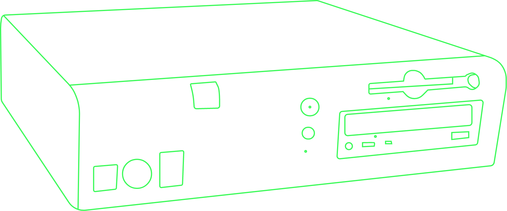

My First PC
Nowadays it seems normal for young kids to start using tablets and mobile phones from a very early age. They get accustomed to how these devices work and how to browse the internet. I got my hands on a station pc when I was around 5 years old and even though the internet had long been invented at that point, I didn't have access to it until a couple of years later. It was a Dell Optiplex gx110 running the new windows 2000 with both a floppy drive and a cd drive. I spent ours in paint and playing ripoffs of old arcade games. It was somehow so normal at the time to run into all sorts of compatability issues when install applications and you had to cross your fingers when installing new games that you had the necessary drivers and good enough requirements. Thankfully, those days are over.
